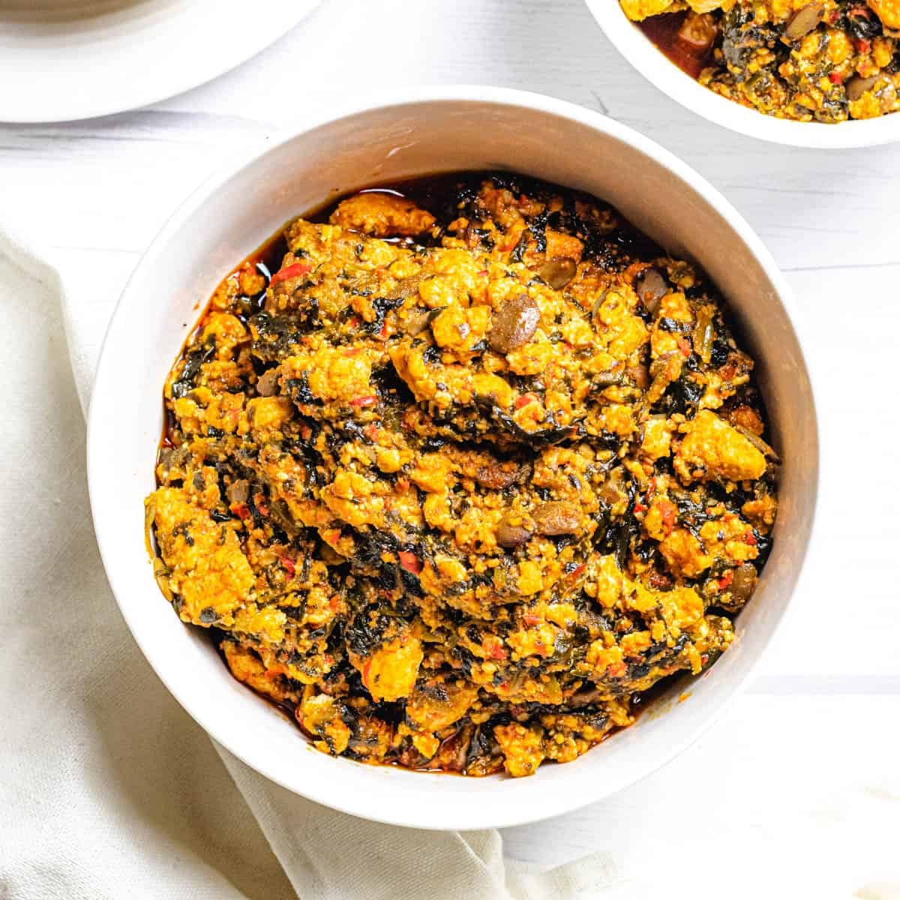

Egusi Soup

Nigerian Egusi Soup is a rich, savory, one-pot dish made with ground melon seeds, palm oil, and leafy green
Ingredients
- Egusi (melon) seeds: 2 cups (blended or pounded)
- Palm oil: 1 to 1.5 cooking spoons
- Proteins: Beef, shaki (cow tripe), kpomo, stockfish, and smoked fish or dried fish
- Crayfish: 2 tablespoons (ground)
- Pepper mix: Red scotch bonnets (rodo), yellow peppers, and onions (blended)
- Seasoning & Spices: Seasoning cubes, salt to taste, and optional locust beans (iru / dawadawa)
- Vegetables: Nigerian pumpkin leaves (ugwu), bitter leaf, or uziza
Preparation steps
-
Cook the Proteins:
- Season your beef, shaki, and kpomo with salt, chopped onions, and seasoning cubes.
- Boil until tender. Add stockfish and dried fish during the final 10 minutes, then set the cooked meat and stock aside.
-
Prepare the Egusi Paste:
- Mix the ground egusi seeds with a small amount of water (and a little chopped onion) in a bowl to form a loose, thick paste.
-
Heat the Palm Oil:
- Pour palm oil into a clean pot and warm it on medium-low heat (do not let it bleach).
- Add a few chopped onions and optional iru (locust beans), frying for about a minute.
-
Fry the Pepper Mix:
- Add your blended scotch bonnets and onions to the oil. Fry for 5 to 7 minutes until the liquid reduces and the flavors meld.
-
Add and Form the Egusi Lumps:
- Drop the egusi paste into the fried pepper mix in small mounds or scoops. Do not stir immediately.
- Cover the pot and let it simmer on low heat for 5 to 10 minutes so the egusi cooks and forms rich, soft lumps.
-
Combine and Simmer:
- Gently stir the egusi and mix it well with the oil and pepper base.
- Pour in your reserved meat stock and a little extra water.
- Add the cooked meats, stockfish, smoked fish, and ground crayfish. Stir gently and let it simmer for 10 minutes.
-
Add Vegetables:
- Stir in your chopped ugwu, bitter leaf, or uziza.
- Taste for salt and seasoning, adjust as needed, and let it cook for 2 more minutes before turning off the heat.
Back to Home